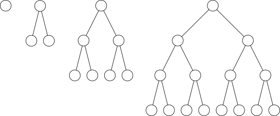
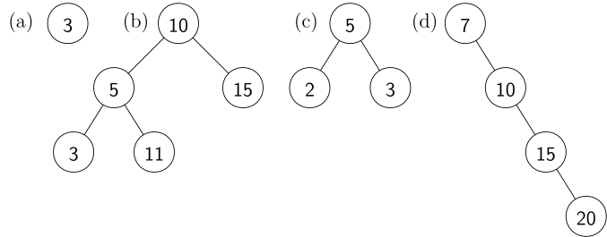

Licenca
To delo je na voljo pod pogoji slovenske licence Creative Commons 2.5:
priznanje avtorstva - nekomercialno - deljenje pod enakimi pogoji.
Celotna licenca je na voljo na spletu na naslovu http://creativecommons.org/licenses/by-nc-sa/2.5/si/. V skladu s to licenco je dovoljeno vsakemu uporabniku delo razmnoževati, distribuirati, javno priobčevati, dajati v najem in tudi predelovati, vendar samo v nekomercialne namene in ob pogoju, da navede avtorja oziroma avtorje in izdajatelja tega dela. Če uporabnik delo predela, kar pomeni, da ga spremeni, preoblikuje, prevede ali uporabi to delo v svojem delu, lahko predelavo dela ponudi na voljo le pod pogoji, ki so enaki pogojem iz te licence oziroma pod enako licenco.

*Implementacija z dvojiškim iskalnim drevesom
Vaja
Dokaži, da velja 1 + 2 + 4 + 8 + ... + 2k−1 = 2k − 1.
Vaja
Popolnoma uravnoteženo dvojiško drevo je dvojiško drevo, v katerem imajo vsa vozlišča razen listov po dva naslednika, poleg tega pa listi nastopajo samo na zadnjem nivoju drevesa. Spodnja animacija prikazuje popolnoma uravnotežena dvojiška drevesa z enim, dvema, tremi in štirimi nivoji. Koliko vozlišč vsebuje popolnoma uravnoteženo dvojiško drevo s k nivoji?

Vaja
Koliko nivojev ima popolnoma uravnoteženo drevo z n vozlišči?
Dvojiško iskalno drevo
Dvojiško iskalno drevo je posebna oblika dvojiškega drevesa, v katerem za vsako vozlišče velja, da so vsi elementi v njegovem levem poddrevesu manjši, v njegovem desnem poddrevesu pa večji od elementa v obravnavanem vozlišču. Na primer, to drevo je iskalno, saj opisana lastnost velja za vsa vozlišča.
Vaja
Katera od sledečih dvojiških dreves so iskalna?

Iskalno drevo se tako imenuje zato, ker omogoča učinkovito iskanje elementov. Če nas zanima, ali element x pripada množici (torej, ali se nahaja v drevesu), najprej preverimo element v korenu drevesa. Če je ta element enak x, smo ga našli. Če je iskani element x manjši od elementa v korenu, se pomaknemo v levega naslednika korena in postopek ponovimo, saj vemo, da elementa x v desnem poddrevesu korena zanesljivo ni. (Zakaj?) Če je iskani element x večji od elementa v korenu, pa se pomaknemo v desnega naslednika korena in postopek ponovimo. Iskanje se zaključi, ko element najdemo ali pa ko vozlišče, v katero bi se morali pomakniti, ne obstaja. V tem primeru vemo, da elementa x v drevesu (oziroma množici) ni.